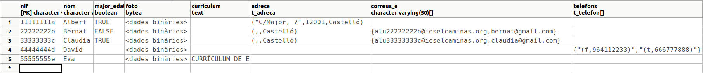

2.3.2.2 BLOB i CLOB
BLOB i CLOB
Comencem per intentar introduir informació, i després la intentarem recuperar. Intentarem introduir un nou registre en PERSONA4, amb un currículum provinent d'un fitxer i també amb una foto. El fitxer el podeu crear amb un editor de textos, per a més comoditat. La foto, podeu agafar qualsevol. Respectivament s'hauran d'anomenar c_eva.txt i foto_eva.jpg
Per a poder introduir les dades de tipus complexos, ens serà molt més còmoda la classe PreparedStatement, ja que podrem posar paràmetres per als valors a introduir, i els paràmetres els podrem posar del tipus que ens convinga. Concretament, per a BLOB (BYTEA) i CLOB (TEXT) utilitzarem els mètodes de PreparedStatement setBynaryStream(index, inputstream, grandària) i setCharacterStream(index, reader, grandària). També existeix el mètode setAsciiStream(index, inputstream, grandària), però no ens assegura agafar bé tots els caràcters, únicament els caràcters ASCII no especials.
import java.io.FileInputStream;
import java.io.FileReader;
import java.io.IOException;
import java.sql.Connection;
import java.sql.DriverManager;
import java.sql.PreparedStatement;
import java.sql.SQLException;
public class Prova2 {
public static void main(String[] args) throws SQLException, IOException {
String url = "jdbc:postgresql://89.36.214.106:5432/rxx";
Connection con = DriverManager.getConnection(url, "rxx", "rxx");
File f1 = new File("c_eva.txt");
FileReader in1 = new FileReader(f1);
File f2 = new File("foto_eva.png");
FileInputStream in2 = new FileInputStream(f2);
PreparedStatement st = con.prepareStatement("INSERT INTO persona4 (nif,nom,curriculum,foto) VALUES(?,?,?,?)");
st.setString(1, "55555555e");
st.setString(2, "Eva");
st.setCharacterStream(3, in1, (int) f1.length());
st.setBinaryStream(4, in2, (int) f2.length());
st.executeUpdate();
in1.close();
in2.close();
con.close();
}
}
Hem creat la referència als fitxers en 2 passos, primer el File i després el FileInputStream, per a poder disposar de la llargària del fitxer (mètode de File). Observeu com per a posar el paràmetre corresponent al fitxer de text hem utilitzat el mètode setCharacterStream(), mentre que per al fitxer binari (per al camp foto) hem utilitzat setBinaryStream().
Si mirem el contingut de la taula des del PgAdmin III, podrem veure el contingut del camp de tipus TEXT, però no el de tipus BYTEA

Per a poder llegir el camp de grans dimensions, utilitzarem els mètodes de ResulSet getBinaryStream(index) i getCharacterStream(index), que tornen un InputStream i un Reader respectivament, que els podrem gestionar com qualsevol InputStream o Reader utilitzat en el tema 2. De moment només llegirem el fitxer de text:
import java.io.IOException;
import java.sql.Connection;
import java.sql.DriverManager;
import java.sql.ResultSet;
import java.sql.SQLException;
public class Prova3 {
public static void main(String[] args) throws SQLException, IOException {
String url = "jdbc:postgresql://89.36.214.106:5432/rxx";
Connection con = DriverManager.getConnection(url, "rxx", "rxx");
ResultSet rs = con.createStatement().executeQuery(
"SELECT nom,curriculum FROM persona4 WHERE nom='Eva'");
while (rs.next()) {
System.out.println(rs.getString(1));
BufferedReader br = new BufferedReader(rs.getCharacterStream(2));
String s = br.readLine();
while (s != null) {
System.out.println(s);
s = br.readLine();
}
}
rs.close();
con.close();
}
}
Per a procedir amb un fitxer binari, ho faríem de forma absolutament similar, però amb el mètode getBinaryStream(index).
En realitat, si el camp de text no és molt gran, de manera que cap en un String, podem utilitzar sense problemes getString(index). El que hem vist anteriorment s'utilitzaria per a textos molt grans.
Llicenciat sota la Llicència Creative Commons Reconeixement NoComercial CompartirIgual 2.5